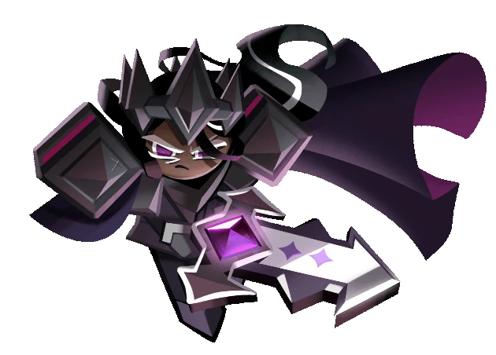
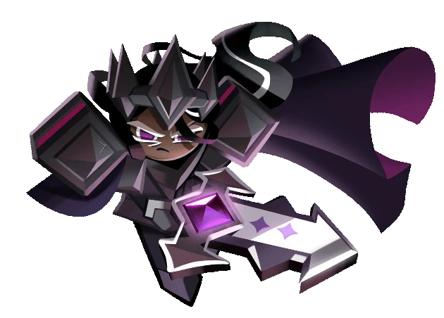
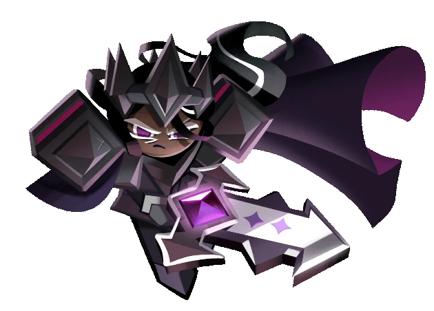
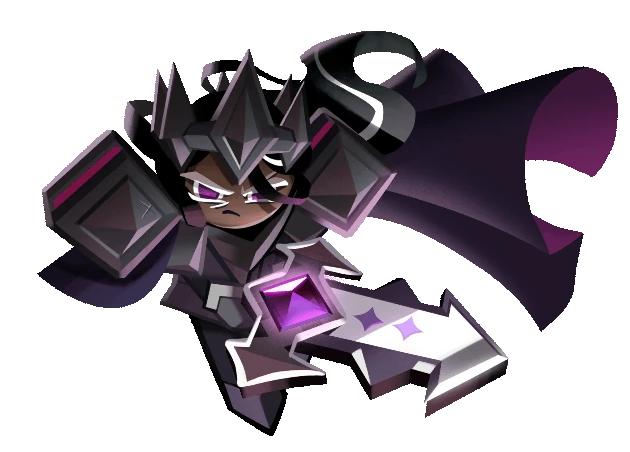

The last bean, devoid of any sweetness, fell down from a withered branch of a lonely cacao tree growing above the edge of a cliff. Lying there in frozen soil, enduring snow and wind, this bean wasn't aware of its destiny to become the main ingredient for the cold and reclusive Dark Cacao Cookie. A warrior of unheard strength, Dark Cacao Cookie wielded the Grapejam Chocoblade. This sword was so heavy it required three average Cookies to even budge it. With each swing, the skies erupted into thunder and lightning, avalanches tumbled down countless mountains. Dark Cacao Cookie was known as a Cookie of few words but great principle. After the Dark Flour War's sorrowful events, the warrior locked himself away in the solitude of his own castle.... Will anything be able to melt his frozen soul once again?